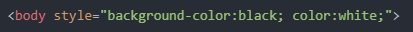

JavaScript를 통해서 할 수 있는 일 중의 하나인
웹브라우저 제어하는 방법에 대한
구체적인, 또 아주 중요한 테크닉들을 알아보자
웹브라우저에서 night 버튼을 생성하고,
그 night 버튼을 클릭했을 때 검은색으로 바꾸고 싶을 때의 상황을 예로 들어서 생각해보자.
body라고 하는 태그가 웹페이지 전체를 감싸는 태그다.
우리는 이 body라고 하는 태그 안에다가 style이라는 속성을 쓰고
이 style이라는 속성의 속성 값으로는
CSS라는 HTML/JS와는 완전히 다른 컴퓨터 언어가 오도록 약속되어 있다.
이 언어의 역할은 디자인이다.

background-color를 black으로 하고 color를 white라고 하고 리로드를 하면,
배경은 검은색, 글꼴은 흰색으로 변경되는 것을 볼 수 있다.
즉, night 버튼을 클릭했을 때
이 웹페이지의 body 태그의 style 속성이 이렇게 바뀔 수 있다면
내가 하고자 하는 것을 할 수 있을 것이다.
그런데 HTML은 내가 코드를 수정하면 그것은 정적인 의미의 수정밖에 될 수 없을 것이다.
다시말해, HTML은 한 번 화면에 표시되면 자기를 바꿀 능력이 없는 정적인 언어이다.
하지만 JavaScript를 이용하면 그 문제를 해결할 수 있다.
이것을 하기 위해서 필요한 지적인 부품들이 있는데,
첫 번째, 이 style에 들어가는 속성의 값이 CSS라고 했다.
그래서 CSS에 대해서 약간의 알 필요가 있다.
두 번째, 그 CSS코드, 다시말해서 body 태그에
style 속성을 주기 위해서는 속성을 주고자 하는 태그가
body 태그라는 것을 웹브라우저에게 알려주는 방법을
JavaScript 문법으로 어떻게 하는지를 알아야 한다.
그래서 결론적으로 우리는 앞으로 두 가지의 중요한 주제를 다뤄야 한다.
첫 번째, CSS의 가장 본질적이고 중요한 문법들을 살펴보아야 한다.
두 번째, JavaScript를 이용해서 내가 제어하고자 하는 태그를 선택하는 방법에 대해서 살펴보아아 한다.
2022.06.14 김명일